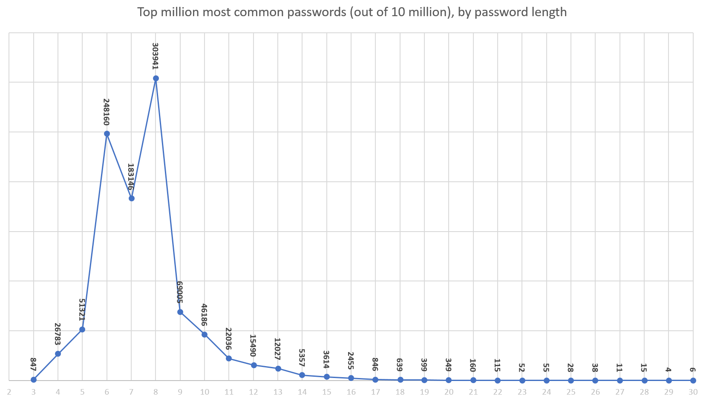

Introduction
One of the most important concepts in cyber security as it relates to users is the idea of the password. Any secure system with an account feature makes use of user-generated passwords. While password are one of the most common and effective security measures out there, there are flaws. Primarily, a flaw in passwords is that both users and administrators/developers are responsible for ensuring their effectiveness. Administrators and developers are responsible for ensuring that their record of the password is kept safe using encryption and restricting access to that data. Users, on the other hand, are responsible for ensuring that their password is not stolen, as well as ensuring that the password they create has proper “password strength.”
This module will contain a brief overview on password encryption. After that the module will go into a more in-depth discussion on password strength. Finally, there will be a short game to review and reinforce your knowledge!
Encryption
When making an account system, developers need to ensure that the passwords of their users are not exposed to anyone. Say that your password is: JEokr34805uow/,.mkl;!@(*. If someone gets access to the document you wrote it down on (because a password like that basically has to be written down) they can enter your account quite easily. However, if the system you are trying to access transmits the password as it is, as “plain text,” then anyone who listens for that kind of information shall receive your password. Also, if someone manages to get access to the database, they would simply have every password for every user.
As a result of all of this, the data has to be encrypted for transmission and storage. For transmission encryption, the best bet is to encrypt according to a pre-existing algorithm and to not use an original one. Therefore, your password will most likely be encrypted for transmission according to something like: RSA, Blowfish, Twofish, or Advanced Encryption Standard (AES).
For storage encryption, the best bet is to use a hashing algorithm. If you don’t already know, a hashing algorithm is considered one-way encryption. Say that your password is: Billy (easy to remember, but also very easy to guess). If a hashing algorithm of some kind was run on Billy, you would get something like rejowgh4wi0i3q4!#^&)* which is pretty much random. What is important about a hash is that is irreversible, so that even if someone gets access to the password when it is stored in the database, they would have rejowgh4wi0i3q4!#^&)* and therefore, no way to change it back to Billy in order to illicitly access that user’s account.
There are good and bad hashing algorithms. Some good ones are:
- SHA256
- SHA512
- SHA-3
- BLAKE2s
- BLAKE2b
On other hand, “bad” hashing algorithms are bad because they have been broken, meaning that it is rather easy for an attacker to reverse the hash and get the password from the hash. The two main broken hash functions are:
- MD5
- SHA-1

Password Strength
You may have been wondering why explanations of encryption have been so focused on. It has to do with how a hacker would try to get access to get your password. If they cannot break the encryptions then they have two main paths to get it. One path is through getting you to give them your password somehow; for example, through setting up a keylogger or social engineering method. The other path is why password strength is important.
The reason why password strength is important is that if some hacker gets access to your hashed password and can’t break the encryption, then they would have to - essentially - guess. Remember, the good hashing algorithms are one-way, so if they cannot reverse the process then they would have to guess at what password produced that hashed string based on the algorithm.
Returning to the previous example, Password: Billy and Hash: rejowgh4wi0i3q4!#^&)*. An assailant would have to run a bunch of passwords through the hashing algorithm and compare the resulting hash to rejowgh4wi0i3q4!#^&)*. Good password strength exponentially decreases the success rate of this kind of guessing.
Length
One of the most important concepts in password strength is the character length of the password itself. Longer passwords mean it would take longer to figure out. Say the system you are trying to access only allows lowercase alphabetical characters and the minimum sized password was five characters (which is a very bad practice, by the way). Then an assailant could just run all possible answers for a string of a-z characters. They could have the password in: 26 X 26 X 26 X 26 X 26 = 11,881,376 attempts if they know the hashing algorithm used, which is not that much for a computer.
Another thing of note is that the most common passwords are of a certain length. According to this diagram:
The vast majority of common passwords are ones that probably fulfill the bare minimum requirements of most password systems. A hacker can get very far with a list of the most common password.
Characters Allowed
As mentioned before, limiting the number of characters allowed in your password is a bad idea. Unicode has about 137,439 characters, allowing almost all of them in a password would be much better than limiting your passwords to a-z, A-Z, and 0-9 values. Using the full range of Unicode would greatly complicate a hacker’s life when they try to guess your password using a program.
Entropy and Special Cases
The concept of entropy in a password is also important, a 15 character password is a decent length, but aaaaaaaaaaaaaaa is still an absolutely terrible password. Having entropy in a password means that it has variety in the characters used within it.
Special case passwords are the ones that are incredibly easy to guess. Some examples of special case passwords are:
- The username
- The email address
- The URL/domain of the website
- The app name
- Anniversary Date
- Pets Name
- Password
Don’t use horribly obvious passwords in general and you should be okay. Avoid using easy to find personal information as well. Check lists of most common passwords and ensure you aren’t using any!

Password Reuse
It's important to understand that you must use separate passwords for different accounts. If you use the same password or slight variations this can greatly compromise your security. If someone does get your password, they can now easily get into your other accounts.
Conclusion
Remember how important password security is when it comes to creating your next password or analysing exsisting passwords you have created. Protecting data and private information relys on how strong your password is and how well you protect it. Password protectors like Password Check can help you decide if your password is strong enough